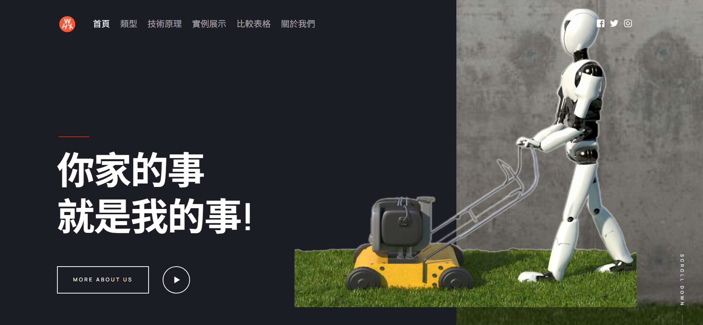
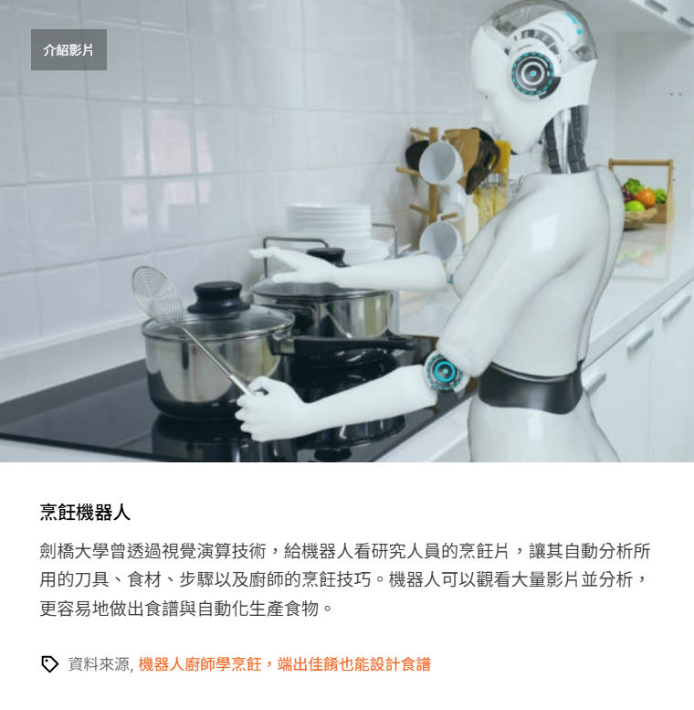
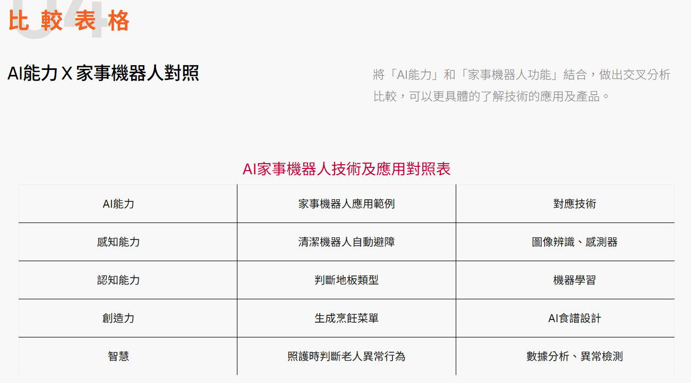

AI 家事機器人

本專題為課堂期末前端網頁設計作品， 主要介紹 AI 家事機器人的種類、核心技術原理與實際應用案例。 採用單頁式響應式網站設計，整合互動功能與視覺排版， 提升資訊呈現的可讀性與互動性。
🧩 專案內容
- AI 家事機器人種類介紹（掃地機器人、智慧助理型等）
- 核心技術原理（感測器、AI 視覺辨識、路徑規劃）
- 實際應用場景（家庭清潔、自動化生活、智慧家庭整合）
- 互動式圖文展示與模組化排版設計
🛠 使用技術
- HTML / CSS / JavaScript
- RWD 響應式網頁設計
- Modal 彈窗互動
- Smooth Scroll 頁面滑動效果
- 單頁式網站架構設計
💡 我的負責內容
- 網站整體版面設計與內容規劃
- HTML 結構調整與模板修改（Phantom 客製化）
- 圖文排版與資訊整理
- 互動功能整合與優化
- 圖片與展示內容統整
專案展示


🔗 專案連結
- GitHub：https://github.com/caiy25629/robotwebsite/
- GitHub Pages：https://caiy25629.github.io/robotwebsite/